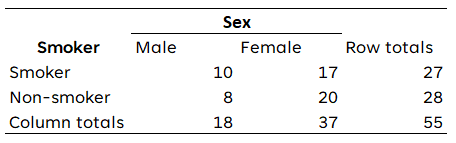
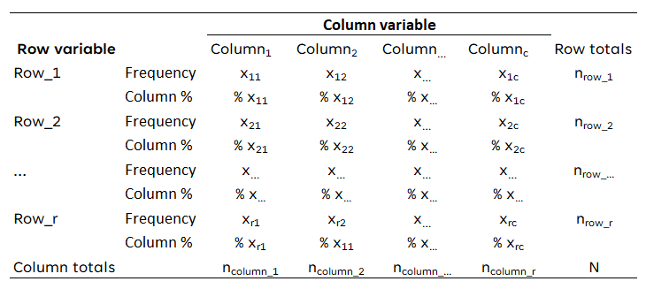
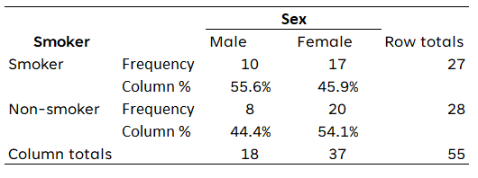
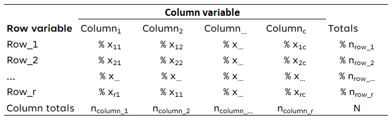
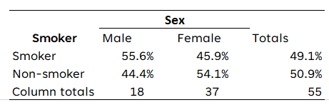
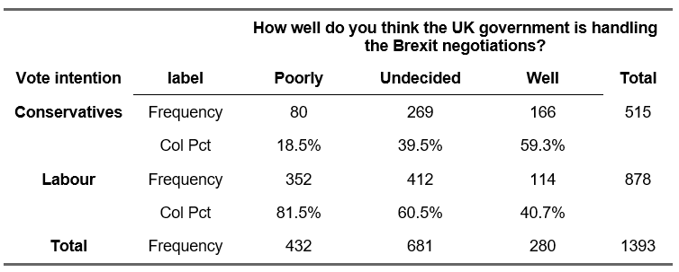
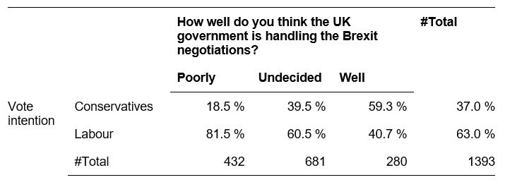

library(expss)
library(openintro)
data(loan50)9 Tables
9.1 Frequency tables
A frequency table displays the number of times a value is present in the data. We have already encountered the function table which provides a simple table of counts. To create a more elaborate frequency table that also includes percentages, we are using package expss. Our example uses data from package openintro:
We create a frequency table with the function fre:
fre(loan50$homeownership)| loan50$homeownership | Count | Valid percent | Percent | Responses, % | Cumulative responses, % |
|---|---|---|---|---|---|
| rent | 21 | 42 | 42 | 42 | 42 |
| mortgage | 26 | 52 | 52 | 52 | 94 |
| own | 3 | 6 | 6 | 6 | 100 |
| #Total | 50 | 100 | 100 | 100 | |
| <NA> | 0 | 0 |
fre-
This is the function to create a frequency table using the
expsspackage loan50$homeownership-
We specify the dataset and variable used using the dollar sign notation, i.e. the name of the data frame before the dollar sign and the name of the variable after the dollar sign.
Reporting
For a frequency table, reporting the counts and valid percentages usually suffices. This is achieved by selecting the first three columns of a frequency table and removing missing values:
fre(loan50$homeownership)[,1:3] |> drop_na() | loan50$homeownership | Count | Valid percent |
|---|---|---|
| rent | 21 | 42 |
| mortgage | 26 | 52 |
| own | 3 | 6 |
| #Total | 50 | 100 |
9.2 Contingency tables
A contingency table is a two-way table consisting of columns and rows. It is also known as a pivot table, a multi-dimensional table, a cross table (or cross tab) and two-way table.
In order to make a contingency table, your data must meet the following requirements:
- Two categorical variables (nominal or ordinal level of measurement)
- Two or more categories (groups) for each variable.
However, contingency tables should only be used when there are a limited number of categories. Below is a contingency table of two variables: a respondent’s sex and whether the respondent smokes.

The table above shows the observed frequencies. This is not how contingency tables should be presented. Instead, there are two basic layouts that are commonly used and that can both be used for this course.
9.2.1 Two layout options for contingency tables
There are two basic layouts that are commonly used and that can both be used for this course.
9.2.1.1 Layout 1
In the first layout you show the percentages per category of the variable in the rows and also the observed frequencies. For the percentages you divide the observed frequencies through the total number of observations in each column. In the column ‘row totals’, you only show the observed frequencies.

Applied to the data above, the contingency table would look like this:

9.2.1.2 Layout 2
In the second layout you show only the percentages per category of the variable in the rows, except for the total row at the bottom. Again, you calculate the percentages per column by dividing the number of observed frequencies by the total number of observations. In the last column you also show the percentages of the row totals.

Applied to the data above (respondent’s sex and smoking), the contingency table would look like this:

9.2.2 Contingency tables in R
Basic tables can be created using table(), but in order to add column percentages and totals and allow exporting the able to Word/HTML, we are using the package flextable:
library(openintro) # We use data from this package
library(flextable) data(loans_full_schema)
table_example <- proc_freq(x = loans_full_schema,
row = "application_type",
col = "homeownership",
include.row_percent = FALSE,
include.table_percent = FALSE)
table_examplehomeownership | |||||
application_type | label | MORTGAGE | OWN | RENT | Total |
individual | Frequency | 3839 | 1170 | 3496 | 8505 |
Col Pct | 80.16% | 86.47% | 90.62% | ||
joint | Frequency | 950 | 183 | 362 | 1495 |
Col Pct | 19.84% | 13.53% | 9.38% | ||
Total | Frequency | 4789 | 1353 | 3858 | 10000 |
table_example = proc_freq(….)-
We define that we want to create a table called
table_exampleusing the functionproc_freq. x = loans_full_schema-
This specifies which data set (data.frame) we would like to use.
row = "application_type"-
This specifies the variable we want to use in the rows of the cross table.
col = "homeownership"-
This specifies the variable we want to use in the column of the cross table.
include.row_percent = FALSE-
This specifies that we do not want to include row percentages. Note that column percentages will be included by default.
include.table_percent = TRUE-
This specifies that we do not want to include table percentages.
Using the following code you can save this to a Word file (save_as_docx) and an HTML file (save_as_html). Note that this file is saved to the current working directory.
save_as_docx(table_example, path = "table_example.docx")
save_as_html(table_example, path = "table_example.html")table_example-
This specifies which table we would like to export.
path = "table_example.docx"-
This specifies the file name for the file to be exported.
Note that this table does require some further (manual) editing if you want to only include the percentages in the cells (see layout 2). Also do not forget to include a title for the table and a better label for the variables.
9.2.2.1 Contingency tables using expss
An alternative solution requires slightly longer R code, but produces a table that does not require further editing for layout option 2. This solutions uses packages expss and huxtable:
library(openintro) # We use data from this package
library(huxtable)
library(expss)
data(loans_full_schema) # Load the data setcross_table <- loans_full_schema |>
tab_cells(`Application type`= application_type) |>
tab_cols(`Home ownership`= homeownership, total(homeownership)) |>
tab_total_label("Total") |>
tab_stat_cpct() |>
tab_pivot() |>
drop_empty_rows() |>
drop_empty_columns() |>
as_huxtable() |>
theme_article() |>
set_number_format(row=everywhere,col=everywhere,value= "%.1 0f %%" ) |>
set_number_format(row=final(1),col=everywhere,value=0)
cross_table| Home ownership | #Total | ||||
|---|---|---|---|---|---|
| MORTGAGE | OWN | RENT | |||
| Application type | individual | 80.2 % | 86.5 % | 90.6 % | 85.0 % |
| joint | 19.8 % | 13.5 % | 9.4 % | 14.9 % | |
| #Total | 4789 | 1353 | 3858 | 10000 | |
cross_table = loans_full_schema-
This defines that we are creating a table called
cross_tableusing the datasetloans_full_schema. When creating your own table, you would of course rename the latter to the name of your own dataset. tab_cells(`Application type`= application_type)-
This specifies that we would like to use the variable
application_typein the rows. We also specify that we would like this variable to be displayed as Application type, using `Application type`(note the use of the so-called backtick (`) ). tab_cols(`Home ownership`= homeownership, total(homeownership))-
This specifies that we would like to use the variable
homeownershipin the columns and also include a Total column. We also specify that we would like the variable to be displayed asHome ownership. tab_total_label("Total")-
We would like the total label to be displayed as
Total. tab_stat_cpct()-
We would like the table to contain column percentages.
tab_pivot()-
This function actually creates the table.
drop_empty_rows()-
Delete any empty rows from the table
drop_empty_columns()-
Delete any empty columns from the table
as_huxtable()-
This transforms this table into a table that the
huxtablepackage can work with, which allows further modification and exporting of the table. theme_article()-
Apply a theme to the table which makes it suitable for publication in a scientific journal.
set_number_format(row=everywhere,col=everywhere,value= "%.0f %%" )-
Round percentages to 0 decimals and add percentage symbol.
set_number_format(row=final(1),col=everywhere,value=0)-
Round case counts to 0 decimals.
Note: you only need to change the first three lines of this code to use it for your own data: the name of the data set and the variables.
This table can be saved to a Word document (quick_docx) and/or HTML file (quick_html) in the following way:
quick_docx(cross_table,
file = "cross_table.docx")
quick_html(cross_table,
file = "cross_table.html")cross_table-
This specifies which table we would like to export.
file = "cross_table.docx"-
This specifies the file name for the file to be exported.
9.3 Presentation of contingency tables
9.3.1 Example of contingency tables (fictitious data):
Below I show two contingency tables concerning the relationship of level of satisfaction with Brexit negotiations and vote intention using the different styles.
9.3.1.1 Layout 1
In the first layout you show the percentages per category of the variable in the rows and also the observed frequencies. For the percentages you divide the observed frequencies through the total number of observations in each column. In the column ‘row totals’, you only show the observed frequencies.
- 
-
Table 1: Relationship of level of satisfaction with Brexit negotiations and vote intention (layout 1)
9.3.1.2 Layout 2
In the second layout you show only the percentages per category of the variable in the rows, except for the total row at the bottom. Again, you calculate the percentages per column by dividing the number of observed frequencies by the total number of observations. In the last column you also show the percentages of the row totals.
- 
-
Table 1: Relationship of level of satisfaction with Brexit negotiations and vote intention (layout 2)
9.4 Instructions
- Use the above layout with three horizontal lines: one at the top, one under the categories of the independent variables (columns) and one at the bottom.
- The variable labels should be bold.
- Put a title above the table. Start the title with ‘Table’ and the number of the table and then use an informative title that summarizes the two variables that are used.
- Although, in principle, the row and column variables in a contingency table can be used interchangeably we use this general guideline for placement: Put the independent variable (here: How well do you think the UK government is handling the Brexit negotiations?) in the columns and the dependent variable (here: Vote for Labour or Conservatives at the next election?) in the rows. This is a convention and you should be consistent to make it easier for your readers.
- Calculate percentages of the variables across the columns. Each column must add up to 100%.
- In case of ordinal variables, keep the ranking (i.e. low, medium, high).
- Because we know that the totals of the columns are 100%, you state the numbers in the row ‘Total’ (the last row). In this way, the reader can, if desired, calculate the observed frequencies of each cell, e.g. 39.5% of 681 = 0.395 * 681 = 278.
- In general, the use of one digit after the decimal point is sufficient.
- At the bottom of the table the source can be mentioned if necessary.
- To interpret the table, we also compare the percentages across the rows: for example, we see that a majority of those who look more favourably on the government’s strategy concerning the Brexit negotiations (59.1%), intend to vote for the Conservatives at the next election, while 60.5% of those who are undecided as well as 81.6% of the respondents who are unhappy with the government’s strategy intend to vote for Labour.